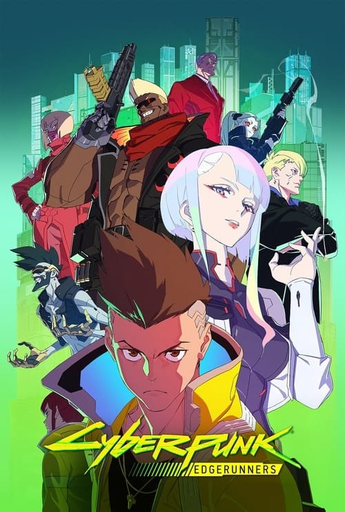

Cyberpunk: Edgerunners (2022)
Sinopsis Rápida
En un futuro distópico dominado por la tecnología y la decadencia, un joven busca ascender en las filas del mundo criminal para alcanzar sus sueños, con consecuencias devastadoras.
Sinopsis Detallada
Cyberpunk: Edgerunners sigue la historia de David Martínez, un chico de la calle que se convierte en un edgerunner, un mercenario ilegal con mejoras cibernéticas. Su búsqueda de la supervivencia y la riqueza lo lleva a un viaje brutal y visceral a través del inframundo de Night City. La serie explora temas como la pobreza, la desigualdad social, la obsesión por la tecnología y el costo de la ambición. Con una animación impresionante y una banda sonora electrizante, la serie es una carta de amor al universo Cyberpunk 2077, a la vez que crea su propia y memorable historia.
¿Por qué tenés que verla?
{{PUNTOS_CLAVE}}Idea Extra
Comparación de la adaptación animada con el videojuego Cyberpunk 2077: diferencias, similitudes y fidelidad a la fuente original.
{{CONTENIDO_RELACIONADO}}